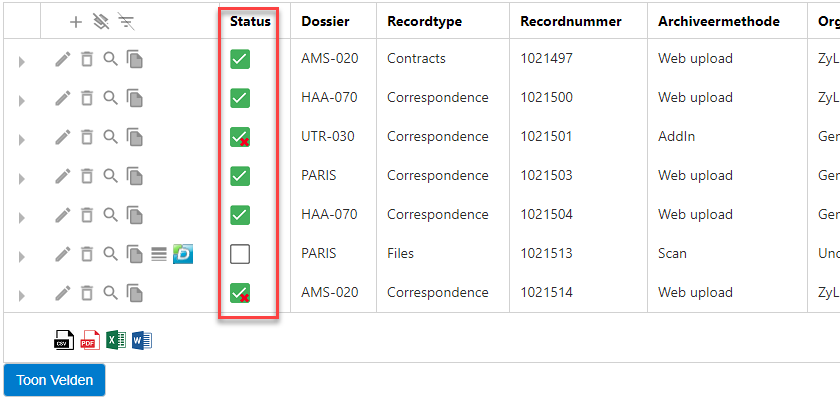
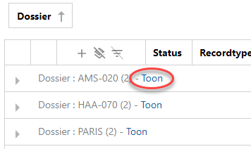

Records Overzicht
Bij 1 archief is de Records Overzichtpagina uw startpagina (via de Home knop in het menu).
U komt ook op deze pagina via Records > Overzicht.
Registreer, organiseer, bewerk en/of exporteer records.
Mogelijk kunt u niet alle hieronder beschreven opties uitvoeren. Dat hangt af van de aan u toegekende rol.
Registreer
Zorg dat nieuwe records in het juiste dossier terecht komen en op de juiste manier worden gearchiveerd.
Klik op  (Nieuw), selecteer een recordsjabloon (documenttype, bijvoorbeeld Contract) en een archiveermethode (web upload of scan), voeg de juiste bestanden toe en klik op Registreer.
(Nieuw), selecteer een recordsjabloon (documenttype, bijvoorbeeld Contract) en een archiveermethode (web upload of scan), voeg de juiste bestanden toe en klik op Registreer.
Vul eventuele velden (metadata) in, zoals afdeling, dossier, advocaat (deze zijn afhankelijk van het gekozen recordsjabloon). Klik op Registreer.
De bestanden zijn nu op de juiste plek gearchiveerd.
Let op: Wanneer u een registratie aanmaakt van een papieren document, voegt u (nog) geen documenten toe. U maakt een Voorblad met barcode of Dymo Label.
Klik op  (Barcode) om het Voorblad te openen, controleren en printen.
(Barcode) om het Voorblad te openen, controleren en printen.
Klik op  (Print Dymo Label) om het Dymo Label te printen.
(Print Dymo Label) om het Dymo Label te printen.
Plaats het Voorblad of het Label op het papieren document dat bij de registratie hoort en scan het.
Metadata die u toevoegt wordt opgeslagen in een relationele database en gesynchroniseerd met (gekoppeld aan) de gearchiveerde bestanden met behulp van een zogenaamde background processor (Hangfire). U kunt de status van deze synchronisatie aflezen in het Records Overzicht.

Organiseer
Groepeer door een kolomkop naar boven te slepen. U kunt kolomkoppen ook weer terug naar de tabel slepen.
Sorteer (oplopend/aflopend) door eenmaal in een kolomkop te klikken.
Toon kolommen wel/niet via de knop Toon Velden (linksonder op de pagina).
Let op: Wanneer u groepeert op Dossier, kunt u alles vinden wat onder dit dossier is geregistreerd; Klik op Toon.

Bewerk records
Let op: Edit en Toon zijn ook beschikbaar op Binary-niveau (zichtbaar als u op  klikt). In dat geval edit/ziet u alleen het gekozen document (in Document View).
klikt). In dat geval edit/ziet u alleen het gekozen document (in Document View).
Wijzig het record; Klik op  (Edit). Niet alle informatie mag na registratie gewijzigd worden.
(Edit). Niet alle informatie mag na registratie gewijzigd worden.
Verwijder het record; Klik op  (Delete).
(Delete).
Bekijk de documenten die behoren bij dit record in ZyLAB Legal Review; Klik op (Toon). De documenten wordt getoond in de Resultatenlijst.
Kopieer het record; Klik op (Kopieer).
Let op: Bij default, Kopieer is niet geactiveerd (key="EnableRegistrationCopying=false").
Neem alstublieft contact op met uw Administrator voor activering (zet key op true).
Exporteer
Exporteer alle records naar een van de volgende formaten: .csv, .pdf, .xlsx of .rtf.
Klik op het juiste icoontje linksonder op de pagina.